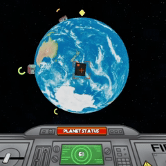
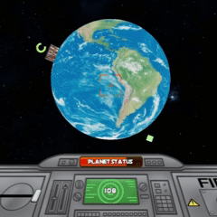

Goddard's Colony Sim
Role: Programmer and VFX
Mobile Colony Upkeep Simulator
Download and play from itch.io
View repository on github
About
Made in UE5, this was the final project for my Serious Game Project class. In this class, we worked in teams to design a concept for different games with real world purposes. After the design process we were to create a short demo for what the game might entail. For this specific project, our goal was to create a game that could be featured in a Robert Goddard science center. Based off of Goddard's theory of using satellites to direct solar energy to charge colonies, in the game the player must maintain colonies around the planet by zapping them with a satellite without hitting the planet's surface. Allowing too many colonies to run out of energy or damaging the planet with the beam will result in a loss. The player must keep the colonies alive until a timer runs out. The game is designed for touch controls and optimized for mobile devices.
Gameplay
Charge colonies by hitting them with your satellite laser. The satellite has infinite output so no worries about overcharging.

Colonies left alone for too long will run out of power and explode, damaging total planet status.

Try not to hit the planet with such a powerful tool. It will leave scorch marks across the planet and damage overall planet status. Hitting 0 planet status will result in the total destruction of the planet.
